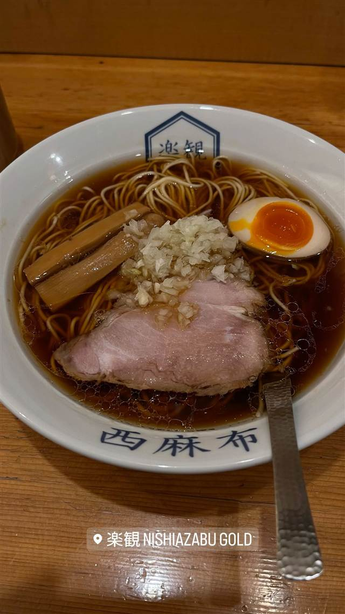

楽観 西麻布（旧店名:楽観 NISHIAZABU GOLD）
わずか4席から始まり、昼夜で屋号を使い分けていた醤油ラーメン
楽観 NISHIAZABU GOLD
2011年に西麻布のわずか4席から始まったラーメン店。昼夜で屋号と味を使い分ける独特の営業スタイルで人気を集め、現在は「楽観」として国内外に店舗を広げている。
TRIVIA
豆知識
- かつては昼は醤油専門「GOLD」、夜は塩専門「SILVER」と看板を使い分けていたが2020年5月に「GOLD」へ統一
- 2017年には米ロサンゼルスにも出店
REVIEWS
世間の評判
91.7ラーメンDB3.67食べログ
はまぐり出汁の塩と醤油の完成度
- ハマグリ出汁にトリュフオイルを効かせた塩ラーメン翡翠を評価する声が多い
- 煮干しや鰹出汁が効いた醤油ラーメン琥珀の完成度を評価する人もいる
- チャーシューが脂っこすぎず食べやすいという声もある
ラーメンデータベース 口コミ92件・最新 2026-02
| 創業 | 2011年6月開業 |
|---|---|
| 系譜 | 西麻布のわずか4席の小さな店として創業。2012年に立川へ移転した後、2016年3月に西麻布へ「楽観 NISHIAZABU GOLD」として再オープン。 |
| 看板 | 醤油ラーメン（琥珀） |
| どこから | 都心 |
| 営業時間 | 月〜日 11:00-16:00、18:00-22:00 |
| 予算 | 昼 ¥1,000～¥1,999 夜 ¥1,000～¥1,999 |
| 場所 | 六本木 東京都港区西麻布1-8-12 |
| メモ | 隠れ家的な立地にある人気店。 |
食べたもの：醤油ラーメン
地図で見る店の情報ラーメンDBX（その日の営業）Instagram
NEARBY
近い店・同じ系統の店
-
 ★
醤油・中華そば 大口駅
中華そば 髙野
元美容師の店主が作る、昆布水に浸した自家製麺の中華そば
昼 ¥1,000～¥1,999 夜 ¥1,000～¥1,999
★
醤油・中華そば 大口駅
中華そば 髙野
元美容師の店主が作る、昆布水に浸した自家製麺の中華そば
昼 ¥1,000～¥1,999 夜 ¥1,000～¥1,999
-
 ★
醤油・中華そば 池尻大橋駅
八雲（やくも）
骨を一切使わないのに深いコクの特製ワンタン麺
昼 ¥501～¥1,000 夜 ¥501～¥1,000
★
醤油・中華そば 池尻大橋駅
八雲（やくも）
骨を一切使わないのに深いコクの特製ワンタン麺
昼 ¥501～¥1,000 夜 ¥501～¥1,000
-
 ★
醤油・中華そば 六本木駅
入鹿TOKYO 六本木店
鶏・豚・貝・海老を別々に炊く独自のカルテットスープ
昼 ¥1,000～¥1,999 夜 ¥1,000～¥1,999
★
醤油・中華そば 六本木駅
入鹿TOKYO 六本木店
鶏・豚・貝・海老を別々に炊く独自のカルテットスープ
昼 ¥1,000～¥1,999 夜 ¥1,000～¥1,999
-
 ★
醤油・中華そば 千歳船橋
中華そば 西川
永福町大勝軒などで8年修行した店主の煮干しそば、百名店5年連続
昼 ¥1,000～¥1,999 夜 ¥1,000～¥1,999
★
醤油・中華そば 千歳船橋
中華そば 西川
永福町大勝軒などで8年修行した店主の煮干しそば、百名店5年連続
昼 ¥1,000～¥1,999 夜 ¥1,000～¥1,999
-
 ★
醤油・中華そば 祖師ヶ谷大蔵駅
世田谷中華そば 祖師谷七丁目食堂
柴崎亭店主が手がける、煮干しと小豆島醤油の中華そば
昼 ～¥999 夜 ～¥999
★
醤油・中華そば 祖師ヶ谷大蔵駅
世田谷中華そば 祖師谷七丁目食堂
柴崎亭店主が手がける、煮干しと小豆島醤油の中華そば
昼 ～¥999 夜 ～¥999
-
 ★
醤油・中華そば 鷺沼
麺処 懐や
中村屋仕込み、一度に2杯しか作らない淡麗系
昼 ～¥999
★
醤油・中華そば 鷺沼
麺処 懐や
中村屋仕込み、一度に2杯しか作らない淡麗系
昼 ～¥999